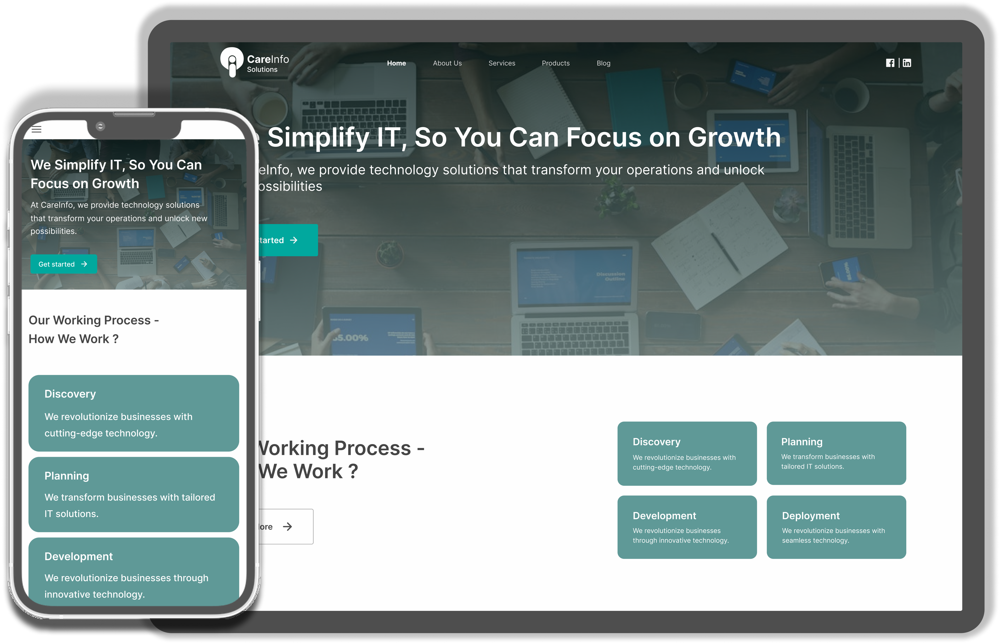

Presenting Multiple Services Clearly
The website needed to organize different service offerings into understandable categories so visitors could identify the company's capabilities more easily
A responsive website designed for CareInfo Solutions, an IT company offering a range of technology services and digital solutions. My contribution covered the website's structure, visual design, and responsive desktop and mobile interfaces across five key pages: Homepage, Services, About Us, Products, and Blog.

CareInfo Solutions is an IT company providing services such as web development, mobile application development, cybersecurity, and digital marketing, along with other technology solutions.
The company needed a website that could communicate its services, introduce the organization, and present its products through a clear and cohesive digital experience. I was responsible for designing the website from the ground up, translating the company's requirements into a structured website experience. My work covered information organization, wireframes, high-fidelity UI design, reusable components, and responsive layouts for desktop and mobile.
The goal was to create a professional and accessible website that clearly communicates the company's offerings while providing visitors with straightforward ways to explore its services and products.
The project covered the complete website UI/UX design for desktop and mobile.
CareInfo Solutions offered multiple IT services and products, making it important for the website to communicate the company's capabilities without overwhelming visitors with information. These 3 design considerations guided the project:
The website needed to organize different service offerings into understandable categories so visitors could identify the company's capabilities more easily
The five pages served different purposes, from introducing the company to presenting its services, products, and blog content. Each page needed a clear structure and a consistent relationship with the overall website
The website needed to provide a cohesive experience across desktop and mobile devices while accommodating different screen sizes, content lengths, and navigation requirements
The design process focused on understanding the company's requirements, organizing its website content, and translating the structure into consistent responsive interfaces.
The website was organized around five primary pages, allowing visitors to explore the company, understand its services, discover its products, and access informational content.
A shared visual foundation was established to maintain consistency across the website's pages and responsive layouts.
Applied the selected brand colors and supporting neutral tones across backgrounds, typography, buttons, and interface elements to create a consistent visual appearance.

Used Inter as the primary typeface throughout the website, establishing a consistent typographic hierarchy for headings, subheadings, body text, and interface labels.

Selected and styled icons to complement the website's visual language, maintain visual consistency, and support clear recognition of interface elements.
| Property | Example |
|---|---|
| Icon Source | Iconify |
| Standard Size | 24 × 24 px |
| Alignment | Center-aligned |
| Style | Filled |
Created reusable UI components, including buttons, navigation elements, service sections, and cards, to maintain consistent styling and layouts across the website.

Developed responsive layouts for desktop and mobile, adapting content arrangements, spacing, typography, and navigation to suit different screen sizes.

Introduces CareInfo Solutions and provides an overview of the company, its services, and its digital offerings.

Organizes the company's IT services into clear sections, helping visitors explore the different solutions offered by CareInfo Solutions.

Presents information about the company, its background, and its identity to help visitors understand the organization.

Showcases the company's digital products and provides visitors with an overview of its product offerings.

Provides a dedicated space for publishing and browsing articles and informational content.

Gives visitors a direct way to reach the company through a contact form and company details

Three key design decisions shaped the CareInfo website: organizing IT services, structuring website content, and making important actions easy to find.


The project established a complete website structure and responsive UI design for CareInfo Solutions.
Organized the company's information across five dedicated pages, covering its services, products, company information, and blog.
Created structured layouts for presenting the company's different IT services and digital offerings.
Established shared typography, colors, iconography, and reusable components across the website.
Delivered responsive layouts for both desktop and mobile devices, maintaining consistency across screen sizes.
The project strengthened my experience in designing company websites from the ground up, structuring multi-page content, and creating responsive interfaces while incorporating feedback throughout the design process.